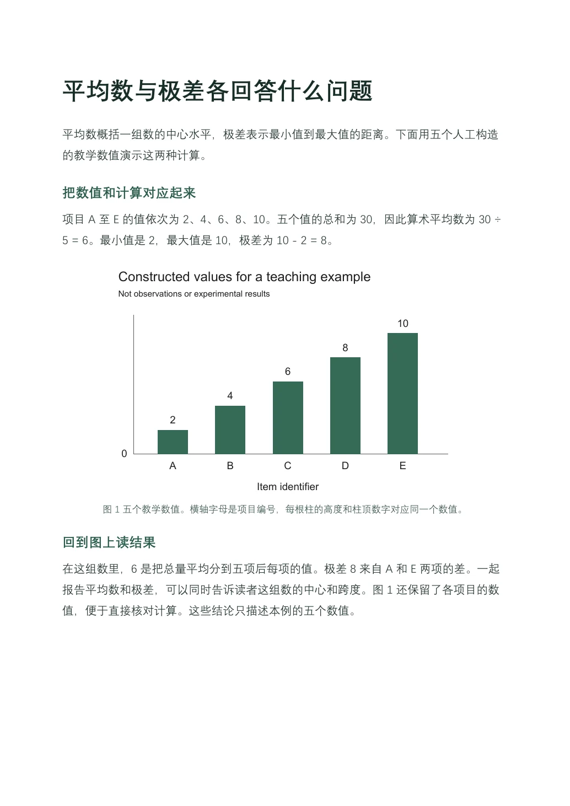

From research to manuscript.
Start with a question, results, or a draft. Work through the literature, evidence, writing, and figures in chat, then take away an editable manuscript.

Choose an edition
Install, update, and uninstall-
Full Workflow Skill
Invoke
$paper-spineto work through the research, writing, figures, and review in chat.Skill-compatible host · @SKILL_SIZE@
Download ZIP -
Skills Pack
Run the full workflow or use research, Followwriting, figures, review, or delivery independently.
Skill-compatible host · @PACK_SIZE@
Download ZIP -
Web Plugin
Install the same Skills Pack with a local workbench for settings, figure selection, previews, and feedback.
Windows x64 · Codex · @WEB_SIZE@
Download ZIP
Anatomy of a draft
Explore the same teaching example as a manuscript, a Followwriting comparison, and a task in the optional local workbench.

- Structure from the reference
- Give the total and count, calculate the mean, then explain the range using the two endpoints.
- Draft excerpt, translated
The five values sum to 30, so the arithmetic mean is 30 ÷ 5 = 6. The smallest value is 2 and the largest is 10, so the range is 10 − 2 = 8.
Followwriting learns the order of explanation from a reference. The numbers in this example determine the calculations and conclusions.

Updates and uninstall
The installer checks the V6 channel and updates the selected edition as a group. You can turn off automatic checks, roll back, or uninstall. Updates and uninstall keep your drafts and workbench tasks.
View management commands